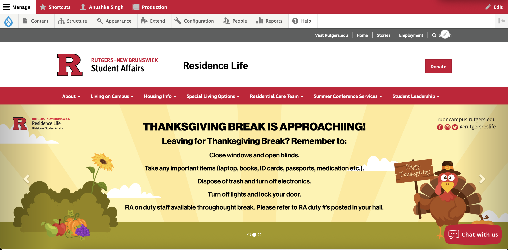

Open-Source Tool Evaluation: Drupal
Introduction
Drupal is an open-source content management system widely used for building websites. It is highly customizable, scalable, and supported by a strong community. In my personal experience working as part of the Rutgers Marketing Department Web Design team, I have used Drupal extensively to maintain and improve more than 10 Student Affairs department websites.
Uses & Features

Drupal allows libraries and institutions to manage large amounts of digital content, from event calendars to user directories. It supports modules for user permissions, workflow management, and accessibility compliance.
Drupal’s modular architecture supports custom content types, views, and layouts, allowing metadata-rich exhibits and flexible page design while keeping branding consistent.
Current Usage
Drupal powers millions of websites globally, including higher education institutions, government agencies, and nonprofits. Its multisite capabilities allow universities to operate multiple related websites efficiently.
Advantages & Disadvantages
Open-Source Software
Advantages:
Cost-effective, community-driven development, transparency, flexibility, no vendor lock-in.
Disadvantages:
Requires technical expertise, ongoing updates, compatibility testing, security maintenance.
Drupal Platform
Advantages:
Strong security, scalable architecture, multilingual & accessibility support, massive community.
Disadvantages:
Steep learning curve, complex upgrades, heavy reliance on contributed modules.
Explore Drupal & Open-Source Resources
Want to learn more about Drupal and open-source tools? These resources were used for this evaluation:
- Drupal Documentation
- Drupal Community Forums
- BuiltWith Usage Stats
- W3Techs Market Share
- Rutgers RCCL
- Personal Rutgers Marketing Department Experience